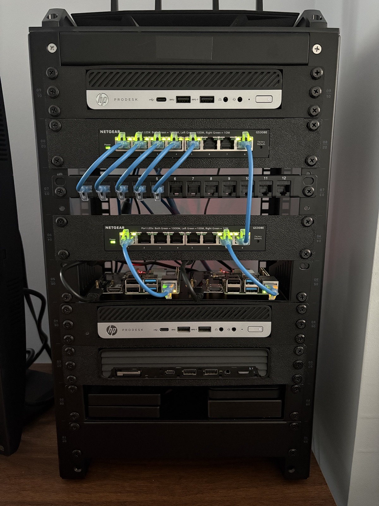

I didn't want to spend money on dedicated networking hardware, so I picked up three retired enterprise HP ProDesk 600 mini PCs and turned them into a full homelab. One runs pfSense, one is my Ubuntu Server running everything in Docker, and my main workstation runs Linux Mint Debian Edition 7 with KVM VMs. The whole network runs across six VLANs with pfSense handling all the firewall rules.

i5-8500T · 8GB RAM · 256GB SSD
Running pfSense. I installed a PCIe NIC myself to get the second ethernet port needed for WAN/LAN separation.
Two Netgear GS308E managed switches with ports assigned to specific VLANs. Asus router running in AP-only mode connected to the switch.
i5-9600T · 16GB RAM · 256GB NVMe (OS) + 5TB HDD (media) + 2TB HDD (data) + 2TB HDD (backups)
Running Ubuntu Server 24.04 with a full Docker stack.
i5-10500 · 40GB RAM · 512GB SSD + 2TB HDD
Running Linux Mint Debian Edition 7 as daily driver with KVM virtual machines.
Everything runs on 802.1Q VLANs across pfSense and two Netgear GS308E managed switches, with ports assigned to specific VLANs. Each VLAN gets its own subnet, DHCP pool, and firewall rules. Default policy between VLANs is deny — nothing talks to anything else unless I explicitly allow it.
10.0.10.0/24 — Main workstation and trusted devices. Has access to the Servers VLAN for self-hosted services.
10.0.20.0/24 — Home server, Raspberry Pi running Home Assistant. Isolated from untrusted devices.
10.0.30.0/24 — WiFi AP and all wireless clients. No access to Trusted or Servers VLANs. Internet only.
10.0.40.0/24 — Reserved for future IP cameras. No internet access, only reachable from the Servers VLAN via Frigate.
10.0.50.0/24 — Isolated lab network for HTB/THM and pentesting. Internet access only, no reach into any other VLAN.
10.0.99.0/24 — pfSense management and switch management interface. Only accessible from the Trusted VLAN.
Media server with GPU passthrough for hardware transcoding. Library stored on a dedicated 5TB HDD.
Reverse proxy handling SSL termination and internal DNS routing for all services via *.server hostnames.
Docker management UI for monitoring and managing all containers on the server.
Service monitoring dashboard. Monitors all containers by name on the internal Docker network.
Mesh VPN running as a subnet router on the server. Gives secure remote access to all home services from anywhere.
marcnims.com runs as a Docker container on this server, exposed publicly via a Cloudflare Tunnel.
This taught me more than any class I’ve taken. VLAN design, trunking, firewall rules, DHCP scoping — you learn it differently when it’s your actual network. Installing the PCIe NIC myself in the pfSense box was a reminder that you don’t need expensive hardware to build something real. Running the Docker stack day-to-day has built sysadmin instincts I couldn’t have gotten from a lab assignment.